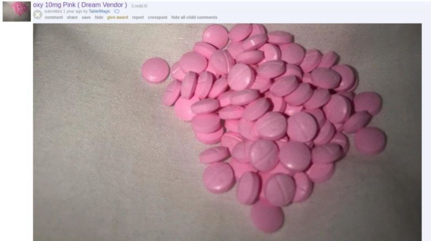
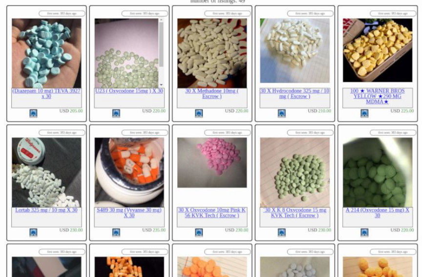
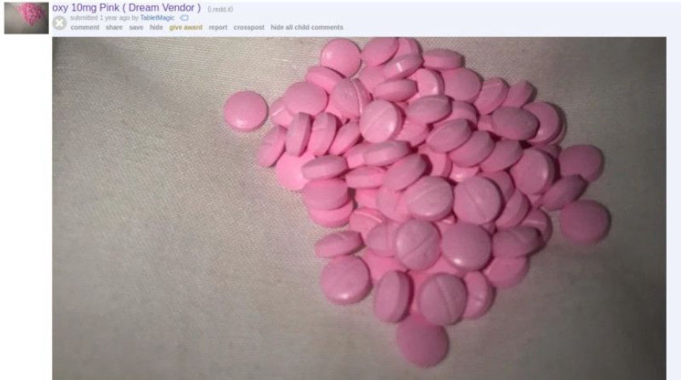
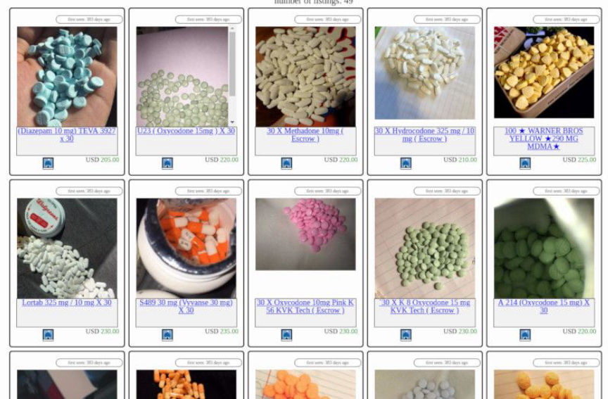

Dream Market Vendor "TabletMagic" Pleads Guilty in Federal Court
~3 min read | Published on 2019-06-04, tagged Darkweb-Vendor, Dream-Market, Pleaded-Guilty using 530 words.
A Rhode Island woman admitted selling OxyContin, oxycodone, hydrocodone, suboxone, and many other drugs through her vendor account on the darkweb marketplace Dream Market. According to court documents, the drug vendor had 1,700 transactions under the username “TabletMagic.”
Jodoin aka TabletMagic is on the left.
The Guilty Plea
Monique Jodoin, the 59 year old defendant, admitted that she had been selling various illegal substances through Dream Market since May 4, 2017, under the username TabletMagic. She admitted selling the following substances:
OxyContin; oxycodone; hydrocodone; suboxone; Subutex; Adderall; Ritalin; morphine; Vyvanse; Xanax; and zolpidem (aka Ambien).

A Reddit Advertisement for oxycodone from TabletMagic
Her Dream Market profile listed 1,700 successful transactions and as of November 2018, she had a rating of 4.92 out of 5 (referenced this post on Dread).
Jodoin converted the Bitcoin proceeds from her “Dream Market” account into U.S. currency through a Florida-based cryptocurrency exchange. On at least two occasions, the cryptocurrency exchange mailed packages containing substantial sums of cash to Jodoin’s home.
Appearing before U.S. District Court Judge John J. McConnell, Jr., Jodoin pleaded guilty to:
seven counts of attempt to distribute a controlled substances; five counts of possession with intent to distribute a controlled substance; and two counts of money laundering.
She also sold on OpenBazaar, the decentralized peer-to-peer platform used by vendors looking to move to an anonymous platform where they control their own funds.

Tabletmagic’s OpenBazaar Listings
The Investigation
According to information presented to the Court, in October 2017, the Postmaster of the Manville, R.I. Post Office alerted USPIS agents that an individual, later identified as Jodoin, was shipping a large number of suspicious “click-n-ship” parcels to individuals around the country. The Postmaster noted that the name and address on the “click-n-ship” labels were fictitious and that the woman dropping off the packages at the post office was not the same person listed as the sender.
During an investigation by USPIS agents, some of the packages shipped by Jodoin were seized and searched pursuant to a court-authorized search warrant. The packages were found to contain various controlled substances. In February 2018, agents executed a court-authorized search of Jodoin’s home and, among other items, seized numerous and varied controlled substances, numerous prescription bottles in other people’s names, boxes of invoices of customer orders, an alphabetized card catalog of customers, Bitcoin receipts and ledgers, $70,000 in cash – bundled and labeled, and $1,460 on Jodoin’s person.
Source: DOJ
The Home Invasion
In October 2018, Jodoin was involved in an incident that made headlines on even cryptocurrency-oriented news outlets, such as CCN. Jodoin, along with an accomplice (Beatriz Viruet), committed a home invasion in an attempt to access funds in a password protected Bitcoin wallet.
Police said the home invasion reportedly stemmed from a Bitcoin account the female victim opened in the name of Jodoin.
And:
Police said Jodoin wanted passwords and money she said was stolen from her.
In connection with the home invasion, officials charged Jodoin with:
risk of injury to a child; home invasion; third-degree criminal mischief; sixth-degree larceny; first-degree robbery; second-degree breach of peace; criminal use of a weapon; second-degree assault with a weapon; five counts of first-degree threatening; and four counts of second-degree reckless endangerment.
After the incident, law enforcement made both Jodoin and the public aware that she was part of another investigation involving “narcotics sales and delivery through the postal system.”
Jodoin aka TabletMagic.
Jodoin aka TabletMagic is on the left.
The Guilty Plea
Monique Jodoin, the 59 year old defendant, admitted that she had been selling various illegal substances through Dream Market since May 4, 2017, under the username TabletMagic. She admitted selling the following substances:

A Reddit Advertisement for oxycodone from TabletMagic
A Reddit Advertisement for oxycodone from TabletMagic
Her Dream Market profile listed 1,700 successful transactions and as of November 2018, she had a rating of 4.92 out of 5 (referenced this post on Dread).
Jodoin converted the Bitcoin proceeds from her “Dream Market” account into U.S. currency through a Florida-based cryptocurrency exchange. On at least two occasions, the cryptocurrency exchange mailed packages containing substantial sums of cash to Jodoin’s home.
Appearing before U.S. District Court Judge John J. McConnell, Jr., Jodoin pleaded guilty to:
She also sold on OpenBazaar, the decentralized peer-to-peer platform used by vendors looking to move to an anonymous platform where they control their own funds.

Tabletmagic’s OpenBazaar Listings
Tabletmagic’s OpenBazaar Listings
The Investigation
According to information presented to the Court, in October 2017, the Postmaster of the Manville, R.I. Post Office alerted USPIS agents that an individual, later identified as Jodoin, was shipping a large number of suspicious “click-n-ship” parcels to individuals around the country. The Postmaster noted that the name and address on the “click-n-ship” labels were fictitious and that the woman dropping off the packages at the post office was not the same person listed as the sender.
During an investigation by USPIS agents, some of the packages shipped by Jodoin were seized and searched pursuant to a court-authorized search warrant. The packages were found to contain various controlled substances. In February 2018, agents executed a court-authorized search of Jodoin’s home and, among other items, seized numerous and varied controlled substances, numerous prescription bottles in other people’s names, boxes of invoices of customer orders, an alphabetized card catalog of customers, Bitcoin receipts and ledgers, $70,000 in cash – bundled and labeled, and $1,460 on Jodoin’s person.
Source: DOJ
The Home Invasion
In October 2018, Jodoin was involved in an incident that made headlines on even cryptocurrency-oriented news outlets, such as CCN. Jodoin, along with an accomplice (Beatriz Viruet), committed a home invasion in an attempt to access funds in a password protected Bitcoin wallet.
Police said the home invasion reportedly stemmed from a Bitcoin account the female victim opened in the name of Jodoin.
And:
Police said Jodoin wanted passwords and money she said was stolen from her.
In connection with the home invasion, officials charged Jodoin with:
After the incident, law enforcement made both Jodoin and the public aware that she was part of another investigation involving “narcotics sales and delivery through the postal system.”